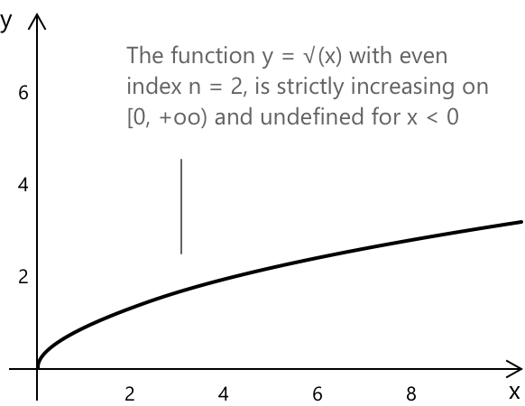

Ірраціональні нерівності
Означення
Ірраціональна нерівність — це нерівність, у якій невідоме знаходиться під знаком корня або піднесено до дробового показника. Точніше, це нерівність вигляду \(F(x) \geq 0\) або \(F(x) > 0\), у якій хоча б один член містить вираз типу \(\sqrt[n]{f(x)}\) або, що еквівалентно, \(f(x)^{p/q}\) при \(q > 1\). Як і у випадку з ірраціональними рівняннями, наявність коренів накладає обмеження на область визначення, і ці обмеження нетривіально взаємодіють із напрямком нерівності.
Центральна складність, що відрізняє ірраціональні нерівності від відповідних рівнянь, полягає в тому, що піднесення обох частин до степеня є монотонною операцією лише за певних умов знака:
- Коли обидві частини є невід'ємними, нерівність зберігається при піднесенні до степеня з парним показником.
- Коли знак однієї з частин невизначений, напрямок нерівності може змінитися на протилежний або така операція може бути взагалі невиправданою.
На практиці розв'язання ірраціональних нерівностей потребує ретельного контролю допустимих значень, оскільки алгебраїчні перетворення можуть призвести до появи сторонніх розв'язків, які необхідно перевірити за допомогою початкової нерівності.
Корені з парним та непарним показником
Поведінка ірраціональної нерівності фундаментально залежить від того, чи є показник \(n\) кореня парним чи непарним, і ця відмінність визначає всю стратегію розв'язання. Коли показник є непарним, функція \(\sqrt[n]{x}\) визначена і є строго зростаючою на всій дійсній прямій, за умови прийняття конвенції дійсних значень, яка використовує функцію знака:
\[\sqrt[n]{x} = \text{sign}(x) \cdot |x|^{1/n}\]
що поширює поняття кореня непарного степеня на від'ємні аргументи. За цієї конвенції \(\sqrt[3]{-8} = -2\), і загалом корінь з непарним показником є оберненою функцією до функції степеня з непарним показником \(t \mapsto t^n\). Як наслідок, маємо:
\[ \sqrt[n]{f(x)} \leq \sqrt[n]{g(x)} \;\Longleftrightarrow\; f(x) \leq g(x) \]
без будь-яких додаткових умов на область визначення, оскільки функція є монотонною на всій \(\mathbb{R}\). Таким чином, випадок з непарним показником є простішим і повторює підхід до розв'язання ірраціональних рівнянь з непарним показником.
Коли показник є парним, ситуація стає складнішою. Функція \(\sqrt[n]{x}\) визначена лише для невід'ємних аргументів, а її область значень обмежена невід'ємними значеннями. Це означає, що будь-яка нерівність вигляду \(\sqrt[n]{f(x)} \leq g(x)\) при парному \(n\) містить неявні обмеження.

Підкореневий вираз має бути невід'ємним, і, залежно від знака \(g(x)\), нерівність може виконуватися тривіально або потребувати піднесення до квадрата. Таким чином, випадок з парним показником природно розбивається на підвипадки залежно від знака правої частини.
Загальні форми та стратегії розв'язання
Нижче наведено найпоширеніші ірраціональні нерівності, що містять квадратний корінь. Кожен тип потребує специфічного методу розв'язання. Для нерівності вигляду:
\[\sqrt{f(x)} \leq g(x)\]
розв'язання відбувається наступним чином. Якщо \(g(x) < 0\), нерівність не має розв'язків у цій точці, оскільки квадратний корінь завжди невід'ємний. Якщо \(g(x) \geq 0\), нерівність еквівалентна піднесенню обох частин до квадрата, що є допустимим, оскільки обидві частини невід'ємні. Повна умова, отже, є наступною системою.
\[ \begin{cases} f(x) \geq 0 \\[6pt] g(x) \geq 0 \\[6pt] f(x) \leq \bigl(g(x)\bigr)^2 \end{cases} \]
Для наступного випадку необхідно розрізнити два підвипадки:
\[\sqrt{f(x)} \geq g(x)\]
-
Коли \(g(x) < 0\), нерівність автоматично виконується для кожного \(x\) в області визначення \(\sqrt{f(x)}\), оскільки ліва частина є невід'ємною і, отже, завжди більша за від'ємну величину.
-
Коли \(g(x) \geq 0\), обидві частини є невід'ємними, і можна піднести їх до квадрата, отримавши наступну систему.
\[ \begin{cases} f(x) \geq 0 \\[6pt] g(x) \geq 0 \\[6pt] f(x) \geq \bigl(g(x)\bigr)^2 \end{cases} \]
Повне розв'язання тоді є об'єднанням двох підвипадків.
Для нерівності вигляду:
\[\sqrt{f(x)} \leq \sqrt{g(x)}\]
оскільки обидві частини є невід'ємними всюди, де вони визначені, піднесення до квадрата завжди є допустимим, коли обидва підкореневі вирази невід'ємні, і система зводиться до наступної.
\[ \begin{cases} f(x) \geq 0 \\[6pt] g(x) \geq 0 \\[6pt] f(x) \leq g(x) \end{cases} \]
Розв'язання ірраціональної нерівності базується на тому самому основоположному принципі, що і розв'язання ірраціонального рівняння: радикальний знак усувається шляхом піднесення обох частин до відповідного степеня, після чого аналізується отримане алгебраїчне рівняння разом із умовами області визначення, що накладаються радикалом. Ключова відмінність полягає в тому, що на кожному кроці необхідно ретельно стежити за напрямком нерівності, оскільки піднесення до квадрата є монотонною операцією лише для невипадкових дійсних чисел.
Типові кроки розв'язання
Незалежно від конкретного вигляду нерівності, процес розв'язання складається з послідовного виконання таких кроків.
- Визначити область визначення, що накладається радикалами.
- Проаналізувати знак частини, що не містить радикалів.
- Підносити до квадрата лише тоді, коли обидві частини є невипадковими.
- Розв'язати отриману алгебраїчну нерівність.
- Знайти перетин з умовами області визначення.
Кожен крок залежить від попереднього: пропуск аналізу області визначення або ігнорування знака правої частини є двома найпоширенішими джерелами помилок при розв'язанні ірраціональних нерівностей.
Приклад 1
Розглянемо наступну нерівність:
\[ \sqrt{2x – 1} \leq x - 2 \]
Ліва частина визначена лише тоді, коли підрадикальний вираз є невипадковим, тому першою умовою є \(2x - 1 \geq 0\), тобто \(x \geq \frac{1}{2}\). Оскільки квадратний корінь завжди є невипадковим, права частина також має бути невипадковою, щоб нерівність мала розв'язання: вимагається \(x – 2 \geq 0\), тобто \(x \geq 2\).
За цих двох умов обидві частини є невипадковими, і піднесення обох частин до квадрата є правильною операцією, що зберігає напрямок нерівності. Задача зводиться до наступної системи.
\[ \begin{cases} x \geq \dfrac{1}{2} \\[6pt] x \geq 2 \\[6pt] 2x – 1 \leq (x-2)^2 \end{cases} \]
Розкриття дужок у правій частині третьої нерівності дає \((x-2)^2 = x^2 – 4x + 4\), отже нерівність набуває вигляду \(2x – 1 \leq x^2 - 4x + 4\), тобто \(x^2 - 6x + 5 \geq 0\). Корені відповідного квадратного рівняння \(x^2 – 6x + 5 = 0\) дорівнюють \(x = 1\) та \(x = 5\), отже квадратний тричлен є невипадковим поза проміжком \([1, 5]\), що дає \(x \leq 1\) або \(x \geq 5\).
Знаходячи перетин усіх трьох умов: перші дві вимагають \(x \geq 2\), а третя вимагає \(x \leq 1\) або \(x \geq 5\). У області \(x \geq 2\) виживає лише частина \(x \geq 5\). Зображення цих умов на числовій прямій дає наступну картину.
| \[\dfrac{1}{2}\] | \[1\] | \[2\] | \[5\] | ||
|---|---|---|---|---|---|
Виділений рядок представляє перетин умов: розв'язанням є множина значень \(x\), для яких обидві нерівності виконуються одночасно.
Отже, розв'язанням є проміжок \([5, +\infty)\).
Приклад 2
Розглянемо наступну нерівність:
\[ \sqrt{x^2 – 3x} \geq x - 1 \]
Область визначення вимагає \(x^2 - 3x \geq 0\), тобто \(x(x-3) \geq 0\), що виконується при \(x \leq 0\) або \(x \geq 3\). Тепер розрізняємо два підвипадки залежно від знака правої частини.
Перший випадок: \(x - 1 < 0\), тобто \(x < 1\). У цій області права частина від'ємна, а ліва частина невід'ємна, тому нерівність автоматично задоволена. Результатом цього підвипадку є перетин \(x < 1\) з областю визначення \(x \leq 0\) або \(x \geq 3\), що дає \(x \leq 0\).
Другий випадок: \(x – 1 \geq 0\), тобто \(x \geq 1\). Обидві частини невід'ємні, і піднесення до квадрата є допустимим. Нерівність набуває вигляду \(x^2 – 3x \geq (x-1)^2 = x^2 - 2x + 1\), тобто \(-3x \geq -2x + 1\), звідси \(-x \geq 1\), що дає \(x \leq -1\). Це необхідно перетнути з \(x \geq 1\) та з областю визначення: перетин є порожнім.
Збираючи два підвипадки, повне розв'язання становить \((-\infty, 0]\). Зо zobrazження умов на дійсній прямій дає наступну картину.
| \[0\] | \[1\] | \[3\] | ||
|---|---|---|---|---|
Виділений рядок представляє перетин умов: розв'язанням є множина значень \(x\), для яких обидві нерівності задоволені одночасно.
Отже, розв'язанням є проміжок \((-\infty, 0]\).
Приклад 3
Розглянемо наступну нерівність:
\[ \sqrt{x^2 – x – 6} \leq \sqrt{2x + 2} \]
Оскільки обидві частини містять квадратні корені, обидва підкореневі вирази мають бути невід'ємними. Умови області визначення: \(x^2 – x – 6 \geq 0\) та \(2x + 2 \geq 0\). Перша розкладається як \((x-3)(x+2) \geq 0\), що дає \(x \leq -2\) або \(x \geq 3\). Друга дає \(x \geq -1\). Перетином цих двох умов є \(x \geq 3\).
Оскільки в області визначення обидві частини невід'ємні, піднесення до квадрата є допустимим, і нерівність еквівалентна \(x^2 - x - 6 \leq 2x + 2\), тобто \(x^2 – 3x – 8 \leq 0\). Корені рівняння \(x^2 - 3x - 8 = 0\) є наступними:
\[ x = \frac{3 \pm \sqrt{9 + 32}}{2} = \frac{3 \pm \sqrt{41}}{2} \]
Оскільки \(\sqrt{41} \approx 6.40\), корені приблизно дорівнюють \(x \approx -1.70\) та \(x \approx 4.70\). Квадратичний поліном є невід'ємним між коренями, тому нерівність виконується при:
\[\frac{3 – \sqrt{41}}{2} \leq x \leq \frac{3 + \sqrt{41}}{2}\]
Зображення умов на дійсній прямій дає наступну картину.
| \[-2\] | \[\frac{3-\sqrt{41}}{2}\] | \[-1\] | \[3\] | \[\frac{3+\sqrt{41}}{2}\] | ||
|---|---|---|---|---|---|---|
Виділений рядок представляє перетин умов: розв'язанням є множина значень \(x\), для яких обидві нерівності задоволені одночасно.
Отже, розв'язанням є замкнений проміжок:
\[\left[3,\, \dfrac{3 + \sqrt{41}}{2}\right]\]
Приклад 4
Тепер розглянемо більш загальну ситуацію, в якій права частина містить дійсний параметр \(k\). Структура множини розв'язків залежить від значення \(k\), і повний аналіз потребує розгляду окремих випадків. Розглянемо наступну нерівність.
\[ \sqrt{x + 4} \leq k \]
Область визначення вимагає \(x + 4 \geq 0\), тобто \(x \geq -4\). Поведінка розв'язання тоді залежить від знака \(k\).
Якщо \(k < 0\), права частина є від'ємною, тоді як ліва частина завжди є невиємною, тому нерівність ніколи не виконується. Розв'язків немає.
Якщо \(k = 0\), нерівність зводиться до \(\sqrt{x + 4} \leq 0\). Оскільки квадратний корінь завжди є невиємним, єдина можливість — це \(\sqrt{x + 4} = 0\), тобто \(x = -4\). Розв'язком є одна точка \({-4}\).
Якщо \(k > 0\), обидві частини є невиємними, і піднесення до квадрата є допустимим. Нерівність набуває вигляду \(x + 4 \leq k^2\), тобто \(x \leq k^2 - 4\). Перетином з областю визначення \(x \geq -4\) є наступний замкнений проміжок.
\[ -4 \leq x \leq k^2 – 4 \]
Цей проміжок є непустим завжди, коли \(k^2 – 4 \geq -4\), тобто коли \(k^2 \geq 0\), що завжди є істиною. Зображення розв'язання на дійсній прямій для випадку \(k > 0\) дає наступну картину.
| \[-4\] | \[k^2-4\] | ||
|---|---|---|---|
Зауважимо, що при \(k \to 0^+\) правий кінець \(k^2 - 4\) наближається до \(-4\) справа, і проміжок звужується до однієї точки \({-4}\), що узгоджується з випадком \(k = 0\).
Отже, розв'язком є замкнений проміжок:
\[[-4,\, k^2 – 4]\]
Вкладені радикали
Подальший рівень складності виникає, коли радикали є вкладеними, як у нерівностях вигляду:
\[\sqrt{a + \sqrt{f(x)}} \leq g(x)\]
У таких випадках описана вище процедура має застосовуватися ітеративно: спочатку ізолюють зовнішній радикал і підносять до квадрата, потім працюють із внутрішнім радикалом, повторюючи той самий аналіз. На кожному кроці умови області визначення накопичуються, і перетин усіх них має бути врахований у кінцевому розв'язанні. Ті самі міркування щодо монотонності застосовуються на кожному рівні вкладення.